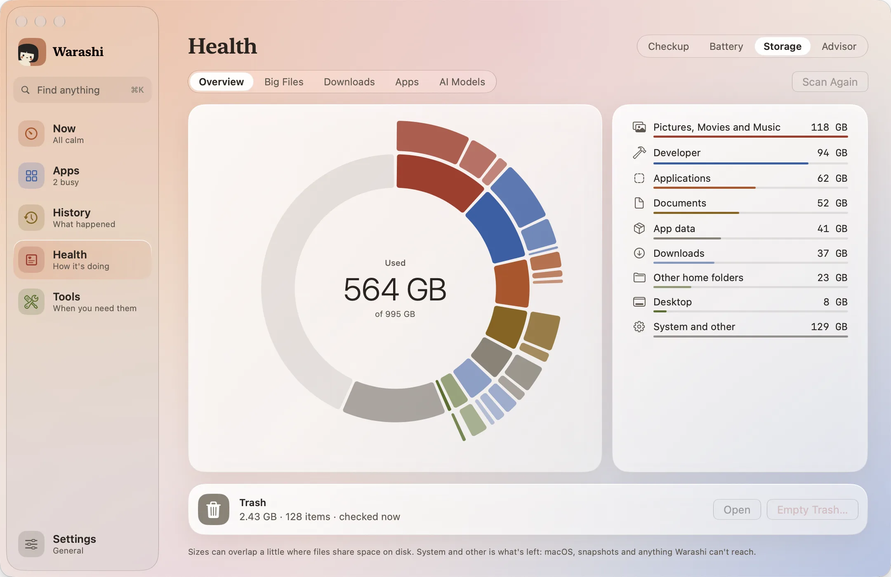
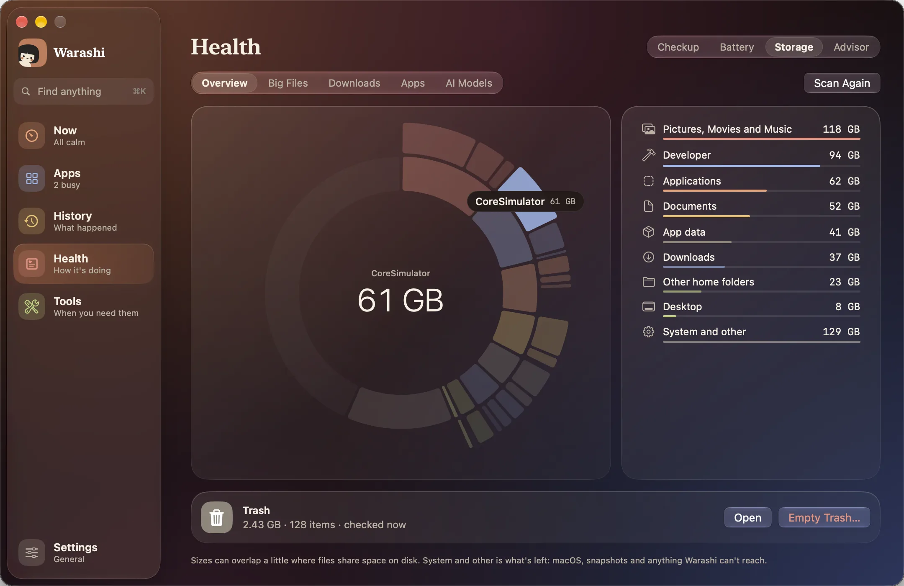

Een volle schijf vertraagt een Mac en blokkeert updates. Het goede nieuws is dat het meeste van de ruimte meestal op een handvol plekken zit. Zo vind je ze.
1. Begin met het grote geheel
Open › Systeeminstellingen › Algemeen › Opslag. De gekleurde balk toont je schijf per categorie, en met de lijst eronder kijk je in elke categorie en leeg je de Prullenmand.
2. Check de bekende boosdoeners
- Downloads en de Prullenmand. Oude installatieprogramma's en schijfkopieën stapelen zich ongemerkt op. Bestanden in de Prullenmand nemen nog ruimte in tot je hem leegt.
- Foto's, muziek en video. Een bibliotheek die helemaal op je Mac staat, kan honderden gigabytes beslaan. Mac-opslag optimaliseren van iCloud bewaart kleinere kopieën op je Mac.
- Back-ups van iPhone en iPad. Oude back-ups van apparaten kunnen erg groot zijn. Beheer ze in Finder, onder Beheer back-ups van je apparaat.
- Ontwikkelaarstools. Afgeleide gegevens, archieven en simulators van Xcode kunnen tientallen gigabytes beslaan, en Docker-images en virtuele machines ook.
3. Wat zijn “Systeemgegevens”?
Het is alles wat in geen andere categorie past: caches, logs, lokale momentopnamen van Time Machine en meer. Veel ervan is tijdelijk en macOS ruimt het op als het de ruimte nodig heeft, dus het kan alarmerend ogen zonder een probleem te zijn.
4. Hoeveel vrije ruimte heb je nodig?
macOS heeft ruimte nodig voor swap, updates en caches. Onder ongeveer 10–15% vrij wordt alles trager. Als je vaak in de buurt van die grens zit, zie dan Moet ik mijn Mac upgraden?
5. Wees voorzichtig met wat je verwijdert
Blijf bij bestanden die je herkent. Willekeurig dingen verwijderen uit je Library-map kan apps laten haperen of hun gegevens kwijtraken, en caches die je met de hand wist, komen meestal gewoon terug.



